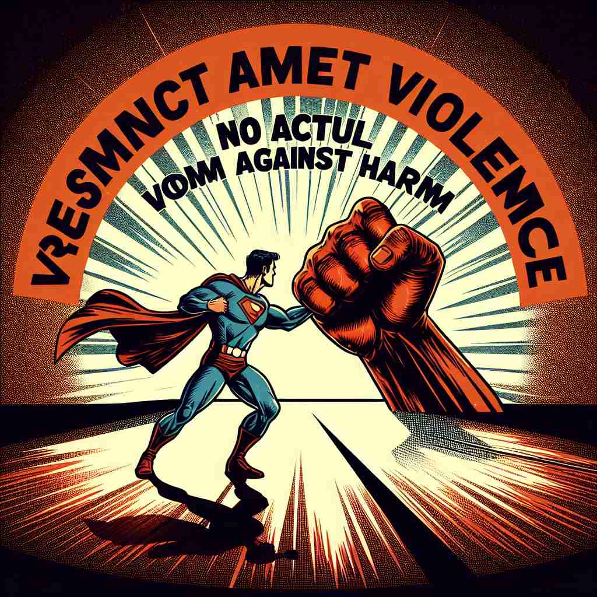

💬 The broken vase is a sign of the recent acts of violence in the house.

💬 The superhero decided to fight against violence in the city.
🔈 ['vaɪəl(ə)ns]
🗝️ n. behavior involving physical force intended to hurt, damage, or kill someone or something
🖼️ 在一个拥挤的酒吧里，两个人因为些许误会而争吵升级为肢体冲突。一人挥起酒瓶，另一人迅速躲避，证明了暴力是以试图伤害或损坏为目的的行为。
🔍 理解'violence'的核心在于'使用物理力量造成伤害或破坏'。想象这种破坏性力量，不仅可以应用于人或物，还可以扩展到情感、自然现象，甚至抽象概念如意义的扭曲。通过联想这种破坏性力量在不同情境下的表现，可以更好地理解和记忆'violence'的各种含义。
💬 The broken vase is a sign of the recent acts of violence in the house.
💬 The superhero decided to fight against violence in the city.
🌳 由词根 "viol"（强力、猛烈）加上名词后缀 "-ence" 组成，表示激烈的行动或行为，通常与破坏性或伤害性有关。
💡 记忆 "violence" 时，可以联想为 "violent"（暴力的）和 "-ence" 组合形成一个抽象名词，表示暴力或强烈的行为。想象激烈场景，有助于迅速记忆它的含义。
🗝️ n. strength of emotion or an unpleasant or destructive natural force
🖼️ 一个海边小镇正被猛烈的风暴侵袭，狂风巨浪不停拍打着海岸，证明了自然力量可以同样具有强大的破坏力，展示了“暴力”的另一种含义。
💬 The violence of the storm damaged many buildings.
❓ 情感或自然力量的强度类比于物理暴力的破坏性
🗝️ n. the unlawful exercise of physical force or intimidation by the exhibition of such force
🖼️ 在一个黑暗的小巷里，一名劫匪举着刀威胁路人交出钱包，这种不法地使用武力或威胁的行为突显了暴力行为的非法性质。
💬 The government passed new laws to combat domestic violence.
❓ 从物理暴力延伸到法律层面的定义
🗝️ n. distortion of meaning or intent
🖼️ 在一个文学讨论小组中，有人对一部小说进行了极端的解释，完全背离了原作者的意图，其他成员困惑地讨论这种分析如何扭曲了作品本身，这展示了“暴力”也可以指意义或意图的扭曲。
💬 His interpretation does violence to the author's original intent.
❓ 对意义或意图的扭曲比喻为对事物的暴力破坏